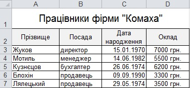

Практична робота 1.2
Створіть електронну таблицю з відомостями про працівників фірми «Комаха». Заповніть її даними та відформатуйте так, як показано на рис. 1.29.

Рис. 1.29. Відомості про працівників фірми «Комаха»
Рис. 1.29. Відомості про працівників фірми «Комаха»
- У новому документа Microsoft Excel уведіть дані, що міститимуться в таблиці. У клітинку А1 уведіть заголовок – Працівники фірми «Комаха», у клітинки діапазону А2:D2 – заголовки стовпців Прізвище, Посада, Дата народження, Оклад.
- Задайте для клітинок діапазону С3:С7 формат дати.
- Виділіть діапазон С3:С7.
- Виконайте команду Формат
 Клітинки і у вікні Формат клітинок перейдіть на вкладку Число.
Клітинки і у вікні Формат клітинок перейдіть на вкладку Число. - Виберіть із списку Числові формати елемент Дата, а зі списку Тип – тип дати, у якому відображається день місяця, місяць і рік.
- Задайте для клітинок D3:D7 грошовий формат, вибравши як валюту українські гривні.
- Введіть дані у клітинки діапазону А3:D7. Коли вводитимете грошові суми, не вказуйте назву валюти, вводьте тільки число, а символи грн. табличний процесор додаватиме автоматично.
- Замість дат народження та сум окладів можуть відображатися символи #######. Вони свідчать про те, що дані не вміщуються у клітинку по горизонталі. Тому стовпці С і D слід розширити. Задамо для цих двох стовпців, а також для стовпця В ширину 12.
- Виділіть стовпці В, С і D, клацнувши заголовок стовпці В і протягнувши курсор над заголовками стовпців С і D.
- Клацніть правою кнопкою миші на заголовку одного з виділених стовпців і виберіть у контекстному меню команду Ширина стовпця. У вікні Ширина стовпця введіть 12 і клацніть кнопку ОК.
- Розширте також стовпець А – так, щоб у ньому вміщувалися всі прізвища. Для цього захопіть лівою кнопкою миші й перетягніть межу між заголовками стовпців А і В.
- Відформатуйте заголовок таблиці. Він має розміщуватися в клітинці, утвореній в результаті об’єднання клітинок А1:D1.
- Виділіть клітинки А1:D1 і натисніть кнопку
 (Об’єднання та розмістити в центрі) групи Вирівнювання вкладки Основне. Клітинка, що утвориться в результаті об’єднання, матиме адресу А1 і в неї буде перенесено дані з вихідної клітинки А1.
(Об’єднання та розмістити в центрі) групи Вирівнювання вкладки Основне. Клітинка, що утвориться в результаті об’єднання, матиме адресу А1 і в неї буде перенесено дані з вихідної клітинки А1. - Збільште шрифт заголовка, вибравши на вкладці Основне зі списку Розмір групи Шрифт значення 15.
- Розширте рядок заголовка, протягнувши вниз межу заголовка рядків 1 і 2.
- Відцентруйте текст заголовка по вертикалі. Для цього виділіть клітинку А1, виконайте команду Формат Клітинки і на вкладці Вирівнювання вікна Формат клітинок зі списку по вертикалі виберіть значення по центру.
- Виділіть клітинки А1:D1 і натисніть кнопку
- Відформатуйте заголовки стовпців таблиці – задайте для них сірий колір тла, напівжирне написання та відцентруйте їх.
- Виділіть діапазон А2:D2 і натисніть кнопку (Напівжирний) групи Шрифт вкладки Основне.
- Клацніть кнопку (По центру), щоб вирівняти заголовки по центру.
- Клацніть позначку
 справа від кнопки (Колір заливки) групи Шрифт вкладки Основне і виберіть на палітрі світло-сірий колір.
справа від кнопки (Колір заливки) групи Шрифт вкладки Основне і виберіть на палітрі світло-сірий колір.
- Щоб заголовок «Дата народження» вміщувався у клітинку, слід встановити для цієї клітинки режим перенесення за словами. Виділіть клітинку С2, виконайте команду Формат Клітинки і на вкладці Вирівнювання вікна Формат клітинок встановіть прапорець переносити по словах.
- Створіть для таблиці такі межі, як показано на рисунку. Усі внутрішні клітинки повинні мати чорні межі, а вся таблиця по периметру та рядок заголовків стовпців – товстішу межую
- Виділіть діапазон А1:D7, клацніть позначку справа від кнопки (Межі) групи Шрифт вкладки Основне і клацніть у наборі стилів меж кнопку (Усі межі). Для всіх клітинок таблиці буде встановлено тонку чорну межу.
- Для встановлення товстішої чорної межі по контуру таблиці клацніть у меню меж кнопку (Товста зовнішня межа).
- У спосіб, описаний у попередньому пункті, встановіть товстішу межу навколо діапазону А2:D2, що містить заголовки стовпців.
- Виділіть діапазон А1:D7, клацніть позначку
- Збережіть документ.